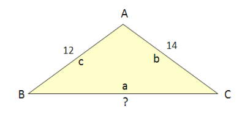

Law of Sines
In any triangle, the ratio of a side length to the sine of its opposite angle
is the same for all three sides. As a formula:
Try this
Drag any vertex of the triangle. Note that the ratio of a side to the sine of its opposite angle is the same for all three sides.
See also Law of Cosines
The Law of Sines says that in any given triangle, the ratio of any side length to the sine of its opposite angle is the same
for all three sides of the triangle.
This is true for any triangle, not just right triangles.
Press 'reset' in the diagram above.
Note that side 'a' has a length of 25.1, and its opposite angle A is 67°.
The sine of 67° is 0.921, so the ratio of 25.1 to 0.921 is 27.27.
If you repeat this for the other three sides, you will find they have the same ratio,
designated here by the letter s.
As you drag the above triangle around, you will see that although this ratio varies, it is always the same for all three sides of the triangle.
Written as a formula
The Law of Sines is written formally as
where A is the angle opposite side a, B is the angle opposite side b, and C is the angle opposite side c.
What is it used for?
A triangle has three sides and three angles.
The Law of Sines is one of the tools that allows us to
solve the triangle.
That is, given some of these six measures we can find the rest.
Depending on what you are given to start, you may need to use this tool in combination with others to completely solve the triangle.
When do I use it?
You can use the Law of Sines if you already know
- One side and its opposite angle, and
- One or more other sides or angles
The first allows us to calculate the "Law of Sines" ratio s.
Then we can use this ratio to find other sides and angles using the other givens.
Example
In the figure below, we are given side b and angle B, which opposite each other, so we can
use them to calculate the 'Law of Sines' ratio (s)
for this particular triangle:

Notice here we are also given the length of side c. So, because we know the Law of Sines ratio for this triangle (s - 21.78), we can find the opposite angle C:
We now know both angles B and C, so using the fact that the
interior angles of a triangle add up to 180°, we can find the third angle A:
Using the same principle as above we know that
so we solve this for a, the last unknown side:
We have now solved the triangle, since we now know all three sides and all three angles.
The circumcircle connection
It turns out that the "Law of Sines" ratio is also the diameter of the triangle's
circumcircle,
which is the circle that passes through all three vertices of the triangle.
This is sometimes formally written as
where r is the circumradius - the radius of the triangle's
circumcircle.
Summary
So if we are given one side and its opposite angle we can find the "law of Sines" ratio for the triangle. Then, using that
ratio and the other given elements, we can solve the triangle.
Proof
See Proof of the Law of Sines.
Things to try
In the figure above
- click "hide details' then reshape the triangle by dragging its vertices.
- Solve the triangle using the Law of Sines.
When done, click on 'show details' to verify your answer.
Other triangle topics
General
Perimeter / Area
Triangle types
Triangle centers
Congruence and Similarity
Solving triangles
Triangle quizzes and exercises
(C) 2011 Copyright Math Open Reference.
All rights reserved